Queston 1
The eight-pointed star, shown in the figure below, is a popular quilting pattern. What percent of the entire $4\times4$ grid is covered by the star?

The eight-pointed star, shown in the figure below, is a popular quilting pattern. What percent of the entire $4\times4$ grid is covered by the star?
There is symmetry, and so whatever fraction of the top-left quarter is shaded, is the same as the fraction of the entire square that is shaded.
Focus on the top-left quarter. Consider moving a single triangle. The shaded area in the problem is exactly the same as the shaded area in this diagram (and the top-left quarter is outlined in bold):

But then it is obvious that exactly half of the top-left quarter is shaded, and so the answer is 50% which is choice B.
Each of the unshaded triangles has base length $2$ and height $1$, so they all have area $\frac{2 \cdot 1}{2} = 1$. Each of the unshaded unit squares has area $1$. The area of the shaded region is equal to the area of the entire grid minus the area of the unshaded region, or $4^2 - 4 \cdot 1 - 4 \cdot 1 = 8$. The star is then $\frac{8}{16} = \frac{1}{2} = \frac{50}{100}$, or $\boxed{\textbf{(B)}~50}$ percent of the entire grid.
There are $16$ total squares in the diagram and each square has $2$ triangles whose areas are half the area of a unit square. Thus, the total number of triangles in the diagram is $4^2 \cdot 2 = 32$ triangles. There are $16$ shaded triangles in the diagram, so the area of the star is $\dfrac{16}{32} = \frac{1}{2} = \frac{50}{100}$, or $\boxed{\textbf{(B)}~50}$ percent.
There are $4$ squares that are entirely shaded and $4$ squares that have no shading. This cancels them out. The rest of the squares are half-half. Therefore the shaded region is $\boxed{\textbf{(B)}~50}$ percent of the grid.
Note that we can move one triangle from each of the four cells in the middle to each of the four corners. This will leave every cell in the grid with one triangle each, and each triangle has an area of half the area of each cell. Thus, our answer must equal to $\frac{1}{2}$, and so our answer is $\boxed{\textbf{(B)}~50}.$
The shaded area is a $2 \times 2$ square in the middle of the figure combined with $8$ small triangles. Since each small triangle is $\frac{1}{2}$ of a unit square, the star's area is equal to the area of $4 + 8 \cdot \frac{1}{2} = 8$ unit squares, which $\boxed{\textbf{(B)}~50}$ percent of the grid.
You can move the extra half a squares and make 4 squares so there are 8/16. The answer is $\boxed{\textbf{(B)}~50}$ percent of 16.
The table below shows the ancient Egyptian heiroglyphs that were used to represent different numbers.

For example, the number 32 was represented by:

What number was represented by the following combination of heiroglyphs?

We just need to count how many of each type of glyph there are.
There is 1 glyph worth 10,000.
There are 4 glyphs worth 100 each.
There are 2 glyphs worth 10 each.
There are 3 glyphs worth 1 each.
So, the answer is 10,423, which is choice B.
The first hieroglyph is worth $10,000$, the next 4 are worth $100 \cdot 4 = 400$, the next $2$ are worth $10 \cdot 2 = 20$, and the last $3$ are worth $1 \cdot 3 = 3$. Therefore, the answer is $10,000 + 400 + 20 + 3 = \boxed{\textbf{(B)}\ 10,423}$
Simply notice that the first hieroglyph represents $10,000$, and the next ones represent $4$ hundreds. The only answer choice with a $1$ in the thousands place and a $4$ in the hundreds place is answer choice $\boxed{\textbf{(B)}\ 10,423}$
From a first inspection, you may notice that there is no thousands hieroglyph. The only option with zero in the thousands place is $\boxed{\textbf{(B)}\ 10,423}$
Buffalo Shuffle-o is a card game in which all the cards are distributed evenly among all players at the start of the game. When Annika and 3 of her friends play Buffalo Shuffle-o, each player is dealt 15 cards. Suppose 2 more friends join the next game. How many cards will be dealt to each player?
We start with Annika and $3$ of her friends playing, meaning that there are $4$ players. This must mean that there is a total of $4 \cdot 15 = 60$ cards. If $2$ more players joined, there would be $6$ players, and since the cards need to be split evenly, this would mean that each player gets $\frac{60}{6}=\boxed{\text{(C) 10}}$ Buffalo Shuffle-O cards each meaning that the final answer is 10.
Lucius is counting backward by $7$s. His first three numbers are $100$, $93$, and $86$. What is his $10$th number?
We plug $a=100, d=-7$ and $n=10$ into the formula $a+d(n-1)$ for the $n$th term of an arithmetic sequence whose first term is $a$ and common difference is $d$ to get $100-7(10-1) = \boxed{\text{(B) 37}}$.
Since we want to find the $9$th number Lucius says after he says $100$, $7$ is subtracted from his number $9$ times, so our answer is $100-(9 \cdot 7) = \boxed{\text{(B) 37}}$
Using brute force and counting backward by $7$s, we have $100, 93, 86, 79, 72, 65, 58, 51, 44, \boxed{\text{(B) 37}}$.
Note that this solution is not practical and very time-consuming.
This can be thought of as an arithmetic sequence. Knowing that our first term is $100$, we have to add $7$ to get to our 0th term, $107$. Our answer is then $107 - 10 \cdot 7 = \boxed{\text{(B) 37}}$.
Betty drives a truck to deliver packages in a neighborhood whose street map is shown below. Betty starts at the factory (labled $F$) and drives to location $A$, then $B$, then $C$, before returning to $F$. What is the shortest distance, in blocks, she can drive to complete the route?
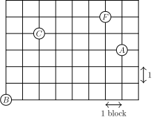Each shortest possible path from $A$ to $B$ follows the edges of the rectangle. The following path outlines a path of $\boxed{\textbf{(C)}\ 24}$ units:
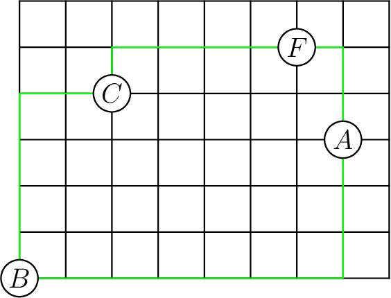We can find the shortest distance using a line diagonally from one point to the other, creating a sort of slope, then find the sum of rise and run of the slope, which happens to be the shortest distance, repeat this process until you get back to Point $F$, and you should get $2 + 1 + 3 + 7 + 4 + 2 + 1 + 4$, which is equal to $\boxed{\textbf{(C)}\ 24}$.
Sekou writes the numbers $15, 16, 17, 18, 19.$ After he erases one of his numbers, the sum of the remaining four numbers is a multiple of $4.$ Which number did he erase?
The sum of all five numbers is $85$. Since $85$ is $1$ more than a multiple of $4$, the number being subtracted must be $1$ more than a multiple of $4$. Thus, the answer is $\boxed{\textbf{(C)}~17}$.
The sum of the residues of these numbers modulo $4$ is $-1+0+1+2+3=5 \equiv 1 \pmod 4$. Hence, the number being subtracted must be congruent to $1$ modulo $4$. The only such answer is $\boxed{\textbf{(C)}~17}$.
On the most recent exam on Prof. Xochi's class,
How many students earned a score of at least $80\%$ and less than $90\%$?
$50$ people scored at least $80\%$, and out of these $50$ people, $13$ of them earned a score that was not less than $90\%$, so the number of people that scored in between at least $80\%$ and less than $90\%$ is $50-13 = \boxed{\text{(D) 37}}$.
Let $a$ denote the number of people who had a score of at least $85$, but less than $90$, and let $b$ denote the number of people who had a score of at least $80$ but less than $85$. Our answer is equal to $a+b$. We find $a = 27 - 13 = 14$, while $b = 50 - 27 = 23$. Thus, the answer is $23 + 14 = \boxed{\text{(D) 37}}$.
Isaiah cuts open a cardboard cube along some of its edges to form the flat shape shown on the right, which has an area of $18$ square centimeters. What is the volume of the cube in cubic centimeters?
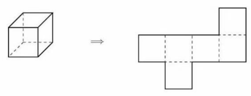Each of the $6$ faces of the cube have equal area, so the area of each face is equal to $\frac{18}{6} = 3$, making the side length $\sqrt3$. From this, we can see that the volume of the cube is $\sqrt{3}^3 = \boxed{\textbf{(A)}3\sqrt{3}}$.
Let the side length of the cube shown be equal to $s$ centimeters. The surface area of this cube is equal to the area of the net of the cube, which is equal to $18$ square centimeters. The surface area of this cube is also $6s^2$ square centimeters, so we have\[6s^2 = 18 \implies s^2 = \frac{18}{6} = 3 \implies s = \sqrt{3}.\]However, we aren't done. We have found that the side length of the cube is $\sqrt{3} cm$, but the question asks for the volume of the cube, which is equal to $s^3 = \sqrt{3}^3 = \boxed{\textbf{(A)}3\sqrt{3}}$ cubic centimeters.
Ningli looks at the $6$ pairs of numbers directly across from each other on a clock. She takes the average of each pair of numbers. What is the average of the resulting $6$ numbers?
Our answer is\[\frac{\frac{1+7}{2} + \frac{2+8}{2} + \cdots + \frac{6+12}{2}}{6} = \frac{\frac{1}{2}((1+7)+(2+8)+\cdots+(6+12))}{6} = \frac{1+2+3+4+5+6+7+8+9+10+11+12}{2 \cdot 6} = \frac{\frac{12 \cdot 13}{2}}{2 \cdot 6} = \frac{78}{12} =\boxed{\textbf{(B)}~6.5}\]
We proceed with brute force. All of the pairs of opposite numbers on the clock are $(12,6)$, $(1,7)$, $(2,8)$, $(3,9)$, $(4,10)$, $(5,11)$, where order doesn't matter. The averages of each of these pairs are $9, 4, 5, 6, 7,$ and $8$ respectively, and the average these numbers is $\frac{9+4+5+6+7+8}{6}=\boxed{\textbf{(B)}~6.5}$
The problem is asking for the average of all $12$ numbers. To find the average of all $12$ numbers, you find the sum of all the integers from $1$ to $12$ which is $78$, and divide it by $12$ because there are 12 terms. Therefore, the answer is $\frac{78}{12}=\boxed{\textbf{(B)}~6.5}$. You could also see that the average of, $2$ and $8$, is $5$, only one more that it's consecutive pair, $1$ and $7$ which is $4$. Assuming that this is the pattern, we can find the average $4$ to $9$ (6 consecutive integers starting with $4$), and we that find our answer is $\boxed{\textbf{(B)}~6.5}$.
In the figure below, $ABCD$ is a rectangle with sides of length $AB = 5$ inches and $AD$ = 3 inches. Rectangle $ABCD$ is rotated $90^\circ$ clockwise around the midpoint of side $DC$ to give a second rectangle. What is the total area, in square inches, covered by the two overlapping rectangles?
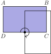The area of each rectangle is $5 \cdot 3 = 15$. Then the sum of the areas of the two regions is the sum of the areas of the two rectangles, minus the area of their overlap. To find the area of the overlap, we note that the region of overlap is a square, each of whose sides have length $2.5$ (as they are formed by the midpoint of one of the long sides, the vertex, and also, since it is rotated 90 degrees). Then the answer is $15+15-2.5^2=\boxed{\textbf{(D)}~23.75}$.
A $\textit{tetromino}$ consists of four squares connected along their edges. There are five possible tetromino shapes, $I$, $O$, $L$, $T$, and $S$, shown below, which can be rotated or flipped over. Three tetrominoes are used to completely cover a $3\times4$ rectangle. At least one of the tiles is an $S$ tile. What are the other two tiles?
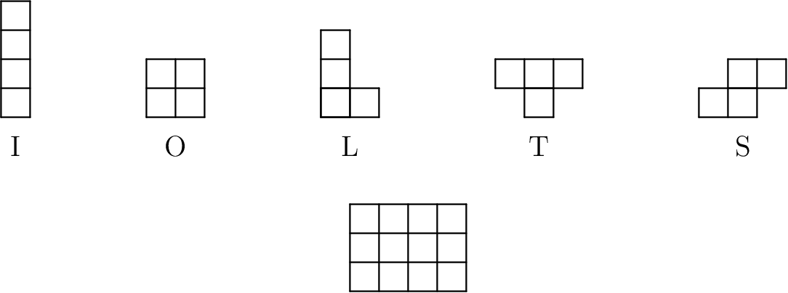The $3\times4$ rectangle allows for $7$ possible places to put the S piece, with each possible placement having an inverted version. One of the cases looks like this:
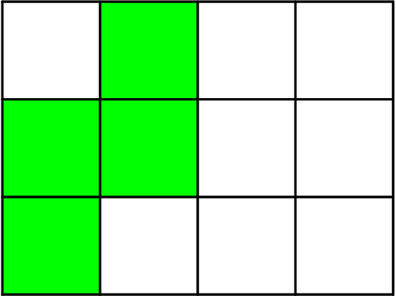As you can see, there is a hole in the top left corner of the board, which would be impossible to fill using the tetrominos. There are three cases in which a hole isn't created; the S lies flat in the bottom left corner, it lies flat in the top right corner, or it stands upright in the center. All three tilings are shown below.
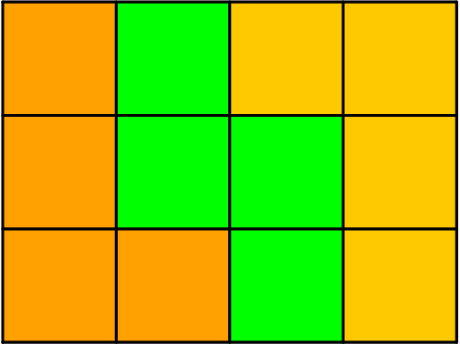 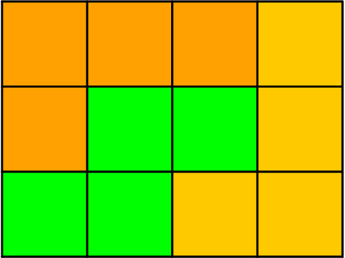 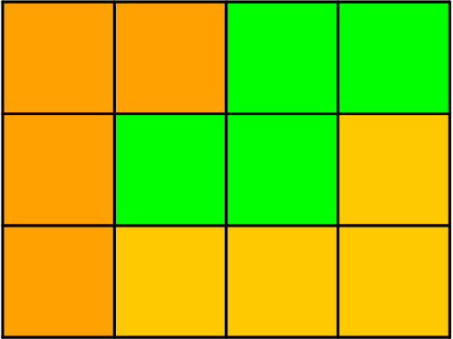For each of the inverted cases, the L pieces can be inverted along with the S piece. Because the only cases that fill the rectangle after the S is placed are the ones that use two L pieces, the answer must be $\boxed{\textbf{(C)}~L \ and \ L}$.
The region shown below consists of 24 squares, each with side length 1 centimeter. What is the area, in square centimeters, of the largest circle that can fit inside the region, possibly touching the boundaries?
The largest circle that can fit inside the figure has its center in the middle of the figure and will be tangent to the figure in $8$ points. By the Pythagorean Theorem, the distance from the center to one of these $8$ points is $\sqrt{2^2 + 1^2} = \sqrt5$, so the area of this circle is $\pi \sqrt{5}^2 = \boxed{\textbf{(C) } 5\pi}$.
Draw the circle in the grid and analyze the radius. Its radius is a little more than 2 but a lot less than 2.5, so the area is a little more than 4π. So, the area of the circle is $\boxed{\textbf{(C) } 5\pi}$ with a radius of approximately 2.23.
Each of the even numbers $2, 4, 6, \ldots, 50$ is divided by $7$. The remainders are recorded. Which histogram displays the number of times each remainder occurs?
Let's take the numbers 2 through 14 (evens). The remainders will be 2, 4, 6, 1, 3, 5, and 0. This sequence keeps repeating itself over and over. We can take $\left\lfloor\frac{50}{14}\right\rfloor$, so after the number 42, every remainder has been achieved 3 times. However, since 44, 46, 48, and 50 are left, the remainders of those will be 2, 4, 6, and 1 respectively. The only histogram in which those 4 numbers are set at 4 is histogram $\boxed{\textbf{(A)}}$.
Writing down all the remainders gives us $2, 4, 6, 1, 3, 5, 0, 2, 4, 6, 1, 3, 5, 0, 2, 4, 6, 1, 3, 5, 0, 2, 4, 6, 1.$ In this list, there are $3$ numbers with remainder $0$, $4$ numbers with remainder $1$, $4$ numbers with remainder $2$, $3$ numbers with remainder $3$, $4$ numbers with remainder $4$, $3$ numbers with remainder $5$, and $4$ numbers with remainder $6$. Manually computation of every single term can be avoided by recognizing the pattern alternates from $0, 2, 4, 6$ to $1, 3, 5$ and there are $25$ terms. The only histogram that matches this is $\boxed{\textbf{(A)}}$.
A number $N$ is inserted into the list $2$, $6$, $7$, $7$, $28$. The mean is now twice as great as the median. What is $N$?
The median of the list is $7$, so the mean of the new list will be $7 \cdot 2 = 14$. Since there are $6$ numbers in the new list, the sum of the $6$ numbers will be $14 \cdot 6 = 84$. Therefore, $2+6+7+7+28+N = 84 \implies N = \boxed{\text{(E) 34}}$
Since the average right now is $10$, and the median is $7$, we see that $N$ must be larger than $10$, which means that the median of the 6 resulting numbers should be $7$, making the mean of these $14$. We can do $2 + 6 + 7 + 7 + 28 + N = 14 * 6 = 84$. $50 + N = 84$, so $N$ = $\boxed{\text{(E) 34}}$
We try out every option by inserting each number into the list. After trying out each number, we get $\boxed{\text{(E) 34}}$
Note that this is very time-consuming and it is not the most practical solution.
We could use answer choices to solve this problem. The sum of the $5$ numbers is $50$. If you add $7$ to the list, $57$ is not divisible by $6$, therefore it will not work. Same thing applies to $14$ and $20$. The only possible choices left are $28$ and $34$. Now you check $28$. You see that $28$ doesn't work because $(28+50) \div 6 = 13$ and $13$ is not twice of the median, which is still $7$. Therefore, only choice left is $\boxed{\text{(E) 34}}$
Kei draws a $6$-by-$6$ grid. He colors $13$ of the unit squares silver and the remaining squares gold. Kei then folds the grid in half vertically, forming pairs of overlapping unit squares. Let $m$ and $M$ equal the least and greatest possible number of gold-on-gold pairs, respectively. What is the value of $m+M$?
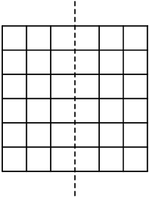First, we note that there are $18$ "pairs" of squares folded on top of each other after the folding. The minimum number of gold pairs occurs when silver squares occupy the maximum number of pairs, and the maximum number of gold pairs occurs when silver squares occupy the minimum number of pairs. The latter case occurs when all $13$ silver squares are placed in different pairs, resulting in $18-13=5$ gold pairs. The former case occurs when the silver squares are paired up as much as possible, resulting in $6$ complete pairs and another square occupying another pair slot. Then there are $18-7=11$ gold pairs. Our answer is $11+5=\boxed{\textbf{(C) }16}$.
We can see that the least number of gold-on-gold pairs will be obtained when the $13$ silver squares are placed on the two sides so that they don't overlap when folded over (because then it will minimize the number of gold-on-golds). We can see that if we split them up $6$ and $7$ on both sides, and then fold it, the number of gold-on-golds will be $18-13 = 5$.
The maximum number of gold-on-golds will be achieved when the silver squares overlap when folded over, which will increase the number of gold-on-golds. If we align 6 silver squares with each other on each side, and put the last one somewhere else, we get the maximum is $18 - 7 = 11$. Therefore, the answer is $11+5=\boxed{\textbf{(C)}~16}$.
Five distinct integers from $1$ to $10$ are chosen, and five distinct integers from $11$ to $20$ are chosen. No two numbers differ by exactly $10$. What is the sum of the ten chosen numbers?
Note that for no two numbers to differ by $10$, every number chosen must have a different units digit. To make computations easier, we can choose $(1, 2, 3, 4, 5)$ from the first group and $(16, 17, 18, 19, 20)$ from the second group. Then the sum evaluates to $1+2+3+4+5+16+17+18+19+20 = \boxed{\text{(C)\ 105}}$.
For $1+2+3+4+5+16+17+18+19+20$, we can add the first term and the last term, which is $21$. If we add the second term and the second-to-last term it is also $21$. There are $5$ pairs that sum to $21$, so the answer is $21 \times 5$ which equals $\boxed{\text{(C)\ 105}}$.
One efficient method is to quickly add $(1, 2, 3, 4, 5, 6, 7, 8, 9, 10)$, which is $55$. Then because you took $50$ in total away from $(16, 17, 18, 19, 20)$, you add $50$. $55+50= \boxed{\text{(C)\ 105}}$.
To solve this problem, I started with the easiest/smallest case
possible. In my opinion, that was
$1+2+3+4+5+16+17+18+19+20$.
I then solved this equation quickly using Little Gauss's method,
rearranging that into
$1+19+2+18+3+17+4+16+5+20$.
I simplified this into
$20+20+20+20+25$.
Solving this simple equation gives us the answer, which is
$\boxed{\text{(C)\ 105}}$.
In the land of Markovia, there are three cities: $A$, $B$, and $C$. There are 100 people who live in $A$, 120 who live in $B$, and 160 who live in $C$. Everyone works in one of the three cities, and a person may work in the same city where they live. In the figure below, an arrow pointing from one city to another is labeled with the fraction of people living in the first city who work in the second city. (For example, $\frac{1}{4}$ of the people who live in $A$ work in $B$.) How many people work in $A$?
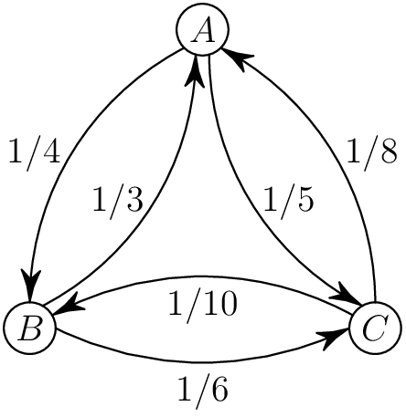There are $100 \cdot (\frac{1}{4} + \frac{1}{5}) = 100 \cdot \frac{9}{20} = 45$ people who do not work in city $A$ that live in city $A$, meaning that $100 - 45 = 55$ people who live in city $A$ work in city $A$. There are $\frac{1}{3} \cdot 120 = 40$ people who live in city $B$ and work in $A$, as well as $\frac{1}{8} \cdot 160 = 20$ people who live in city $C$ that work in city $A$. Therefore, the answer is $55 + 40 + 20 = \boxed{\textbf{(D)}\ 115}$.
We could also make an equation. Let's denote the number of people that
live in city $A$ as $a$, $B$ as $b$, and $C$ as $c$. If $x$ denotes the
number of people working in city $A$, then $x = \frac{1}{8}c +
\frac{1}{3}b + a - \frac{1}{4}a - \frac{1}{5}a$. This is because
$\frac{1}{8}$ of the people from City $C$ and $\frac{1}{3}$ of the
people from City $B$ work in city $A$ as shown in the image. We also
know that $\frac{9}{20}$ of the people living in $A$ work in other
cities. We are already given the values of variables $a$, $b$, and $c$
as $100$, $120$, and $160$ respectively. Plug the values it into the
main equation like this:
$x = 160 \cdot \frac{1}{8} + 120 \cdot \frac{1}{3} + 100 - 100 \cdot
\frac{1}{4} - 100 \cdot \frac{1}{5}$. We solve for it and get our answer
$\boxed{\textbf{(D)}\ 115}$.
The circle shown below on the left has a radius of 1 unit. The region between the circle and the inscribed square is shaded. In the circle shown on the right, one quarter of the region between the circle and the inscribed square is shaded. The shaded regions in the two circles have the same area. What is the radius $R$, in units, of the circle on the right?
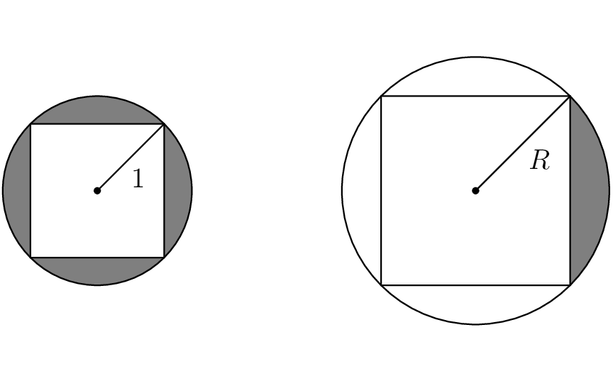The area of the shaded region in the circle on the left is the area of the circle minus the area of the square, or $\big(\pi-2)$. The shaded area in the circle on the right is $\dfrac{1}{4}$ of the area of the circle minus the area of the square, or $\dfrac{\pi R^2-2R^2}{4}$, which can be factored as $\dfrac{R^2(\pi-2)}{4}$. Since the shaded areas are equal to each other, we have $\pi-2=\dfrac{R^2(\pi-2)}{4}$, which simplifies to $R^2=4$. Taking the square root, we have $R=\boxed{\text{(B)\ 2}}$
The side length of the smaller square is $\sqrt{2}$, which follows from
the Pythagorean Theorem since the square is inscribed in a circle of
radius $1$, making the diagonal equal to $2$. Thus, the area of the
square is $(\sqrt{2})^2 = 2$. The circle in which the square is
inscribed has radius $1$, so its area is $\pi \cdot 1^2 = \pi$.
Therefore, the area of the shaded region (the part of the circle not
covered by the square) is $\pi - 2$.
Now, consider the larger square, which is inscribed in a circle of
radius $R$. This square can be divided into four congruent right
triangles by drawing lines from the center of the circle to the vertices
of the square. Each triangle has legs of length $R$ and includes a
$90^\circ$ angle at the center. Using the triangle area formula
$\frac{1}{2}ab\sin(C)$ with $a = b = R$ and $C = 90^\circ$, each
triangle has area $\frac{1}{2}R^2$. Since there are four such triangles,
the area of the square is $4 \cdot \frac{1}{2}R^2 = 2R^2$. The area of
the circle is $\pi R^2$, so the area of the shaded region (the part of
the circle outside the square) is $\frac{1}{4}(\pi R^2 - 2R^2) =
\frac{1}{4}R^2(\pi - 2)$.
We are told that this shaded region also has area equal to $\pi - 2$, so
we set up the equation $\frac{1}{4}R^2(\pi - 2) = \pi - 2$. Assuming
$\pi - 2 \neq 0$, we divide both sides by $\pi - 2$, giving
$\frac{1}{4}R^2 = 1$, which leads to $R^2 = 4$, and finally $R = 2$.
Thus, the answer is $\boxed{\text{(B) } 2}$.
We start with the first area. Since the square is inscribed, its diagonal is $2\implies$ its side length is $\sqrt{2}\implies$ its area is $2$, therefore the first area is $\pi-2$. The second area is $\dfrac{R^2\pi-2R^2}{4}$, found in a similar manner. Writing and solving the equation, we have\[\pi-2=\dfrac{R^2\pi-2R^2}{4}\implies4(\pi-2)=R^2(\pi-2)\implies R=2.\]The answer is $\boxed{\text{(B) }2}$
Since the two figures are similar, and the 4 regions in the first circle are equal in area to one of the four regions in the second circle, the second figure's area is $4$ times the first figure's area. Therefore, the side lengths are multiplied by a factor of $\sqrt{4} = 2$, so the answer is $1 \cdot 2 = \boxed{\textbf{(B)} 2}$.
First find the area of the smaller circle with the known radius. Since
the radius is $1$, the area of the circle is $\pi$, and finding the side
length of the square would equal to $\sqrt{2}$. Squaring that gives us
the area of the square which is $2$, and the shaded area of the first
one is equal to $\pi - 2$. The second area can be shortened to
$\frac{R^2\pi}{4} - \frac{\left(\sqrt{2R^2}\right)^2}{4}$, since we only
need $\frac{1}{4}$th of the sections. We then make them equal, which
makes this equation:
$\pi - 2 = \frac{R^2\pi}{4} - \frac{\left(\sqrt{2R^2}\right)^2}{4}$
Simplifying this equation would be $4\pi - 8 = R^2\pi - 2R^2$. We can
factor out the $R^2$ which makes $4\pi - 8 = R^2\left(\pi - 2\right)$.
Dividing out the $\pi - 2$ would give us $4$ on the left side. $4 = R^2$
which leaves us to choice $\boxed{\text{(B) }2}$.
We are given two circles, each with an inscribed square. In the first
circle, the radius is 1 unit, and the region between the circle and the
inscribed square is shaded. In the second circle, one quarter of the
region between the circle and the inscribed square is shaded. The shaded
areas in both circles are the same. Our goal is to determine the radius
$R$ of the second circle.
Step 1: Set up a ratio for the areas of the shaded regions We know that
the shaded region in the first circle (with radius 1) and the shaded
region in the second circle (with radius $R$) are proportional in terms
of the total area between the circle and the inscribed square. The
shaded area in the second circle is one quarter of the total area
between the circle and the square, while the shaded area in the first
circle is the entire region.
Step 2: Relate the areas to the radius
Let’s recall that the area between the circle and the inscribed square
is proportional to the square of the radius of the circle because the
square's side length scales with the radius of the circle.
So, in the first circle with radius 1:\[\text{Area between circle and
square} \propto 1^2 = 1\]and the shaded area is proportional to the
entire area between the circle and the square, i.e., 1.
In the second circle with radius $R$:\[\text{Area between circle and
square} \propto R^2\]and the shaded area is one-quarter of this total
area, so it is proportional to $\frac{1}{4} R^2$.
Step 3: Set up the ratio of shaded areas
We are told that the shaded areas in both circles are the same, so we
set up the following equation:\[1 = \frac{1}{4} R^2\]
Step 4: Solve for $R$
Multiply both sides of the equation by 4:\[4 = R^2\]Taking the square
root of both sides:\[R = 2\]
Thus, the radius of the second circle is $\boxed{\text{(B) 2}}$.
Notice that if you shaded the rest of the region between the square and the circle, then the area would be $4$ times the area of the shaded region in the smaller circle. Since the radius changes by a factor of $k^2$, $k^2 = 4$, solving for gets you $2$. Hence, the answer is $\fbox{\textbf{(B)}\ 2}$
We want to find a quick and easy formula that can be applied to this
(not necessarily a formula, but a rule). We take the area of the circle
and subtract it from the area of the square and you will find the area
of the $4$ outer shaded regions. This rule is basically $\pi
r^2-2r^2=r^2(\pi-2)$. We plug in the radius from the first figure and
compute the answer to be $\pi-2$. Since this represents the area of ONE
region in the second figure, we have to multiply our result by four
which gets us $4\pi-8$ or to make it easier, you can factor the four and
make it $4(\pi-2)$. Using our rule, we can set both equations equal to
each other.
$R^2(\pi-2)=4(\pi-2)$
$R^2=4$
$R=\boxed{\textbf{(B)}2}$
Two towns, $A$ and $B$, are connected by a straight road, $15$ miles long. Traveling from town $A$ to town $B$, the speed limit changes every $5$ miles: from $25$ to $40$ to $20$ miles per hour (mph). Two cars, one at town $A$ and one at town $B$, start moving toward each other at the same time. They drive at exactly the speed limit in each portion of the road. How far from town $A$, in miles, will the two cars meet?
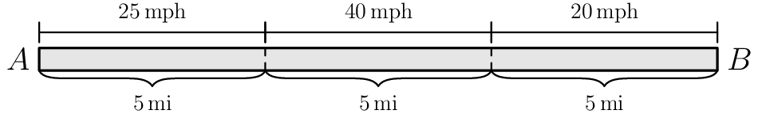
From the answer choices, the cars will meet somewhere along the $40$ mph
stretch. Car $A$ travels $25$mph for $5$ miles, so we can use
dimensional analysis to see that it will be $\frac{1\ \text{hr}}{25\
\text{mi}}\cdot 5\ \text{mi} = \frac{1}{5}$ of an hour for this portion.
Similarly, car $B$ spends $\frac{1}{4}$ of an hour on the $20$ mph
portion.
Suppose that car $A$ travels $x$ miles along the $40$ mph portion-- then
car $B$ travels $5-x$ miles along the $40$ mph portion. By identical
methods, car $A$ travels for $\frac{1}{40}\cdot x = \frac{x}{40}$ hours,
and car $B$ travels for $\frac{5-x}{40}$ hours.
At their meeting point, cars $A$ and $B$ will have traveled for the same
amount of time, so we have\begin{align*} \frac{1}{5} + \frac{x}{40} &=
\frac{1}{4} + \frac{5-x}{40}\\ 8 + x &= 10 + 5-x, \end{align*}so $2x =
7$, and $x = 3.5$ miles. This means that car $A$ will have traveled $5 +
3.5= \boxed{\textbf{(D)\ 8.5}}$ miles.
The first car, moving from town $A$ at $25$ miles per hour, takes $\frac{5}{25} = \frac{1}{5} \text{hours} = 12$ minutes. The second car, traveling another $5$ miles from town $B$, takes $\frac{5}{20} = \frac{1}{4} \text{hours} = 15$ minutes. The first car has traveled for 3 minutes or $\frac{1}{20}$th of an hour at $40$ miles per hour when the second car has traveled 5 miles. The first car has traveled $40 \cdot \frac{1}{20} = 2$ miles from the previous $5$ miles it traveled at $25$ miles per hour. They have $3$ miles left, and they travel at the same speed, so they meet $1.5$ miles through, so they are $5 + 2 + 1.5 = \boxed{\textbf{(D) }8.5}$ miles from town $A$.
Instead of using algebra, we can visualize how far each car has traveled every hour. Let us divide each portion of the road into distances traveled each hour: For the $25$ mph portion, we divide it up into 5 sections, because $\frac{25\ \text{mph}}{5\ \text{mi}} = 5\ \text{hr}$. Similarly, we divide the $40$ mph portion into 8 sections ($\frac{40\ \text{mph}}{5\ \text{mi}} = 8\ \text{hr}$) and the $20$ mph portion into 4 sections ($\frac{20\ \text{mph}}{5\ \text{mi}} = 4\ \text{hr}$). Thus, we have the following diagram.
After four hours, car A has reached the end of the $20$ mph portion, while car B has traveled $\frac{4}{5}$ of the $25$ mph portion. We can plot the amount of distance traveled, with the red dot representing car A and the blue dot representing car B.
If we keep moving the dots, they will eventually meet at segment 3.5 of the $40$ mph portion of the road (note that each segment represents 1 hour of time traveled):
Now, we must account for the $5$ miles in the $25$ mph portion. Since
the two cars meet at segment 3.5 of the $40$ mph portion, we add the $5$
miles traveled in the $25$ mph section:
\[5\ \text{mi} + 3.5\ \text{mi} = \boxed{\textbf{(D) 8.5}}\]miles